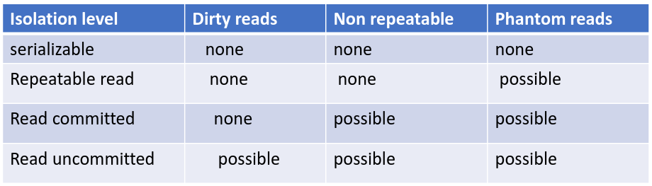

Computer Architecture and Networks
Table of Contents
- 1. Definitions
- 2. Number Bases
- 3. Exam Rundown
- 3.1. Headings of the paper (20 marks each)
- 3.2. Computer system
- 3.3. Inside the Case
- 3.4. Hardware Platform
- 3.5. Hardware Platforms: Instruction Cycle
- 3.6. Java Virtual Machine
- 3.7. Types of computers
- 3.8. Components of a PC
- 3.9. Server/Personal
- 3.10. OS
- 3.11. Computer Application
- 3.12. Programming Languages
- 3.13. Low Level/High level languages
- 3.14. Hardware Platforms
- 3.15. Machine Code
- 3.16. High Level Language
- 3.17. Compiler
- 3.18. Hardware Platforms: instruction cycle
- 3.19. Key Developments in Networks
- 3.20. Desktop Virtualization
- 3.21. True of false
- 3.22. Base value conversion
- 3.23. Binary addition/subtraction/multiplication/division
- 3.24. Databases
- 4. Remove at the End
1. Definitions
2. Number Bases
2.1. Decimal
1234
= (1 * 103) + (2 * 102) + (3 * 101) + (4 * 100) = 1000 + 200 + 30 + 4 = 1234
1024
= (1 * 103) + (0 * 102) + (2 * 101) + (4 * 100) = 1000 + 0 + 20 + 4 = 1024
20480
= (2 * 104) + (0 * 103) + (4 * 102) + (8 * 101) + (0 * 100) = 20000 + 0 + 400 + 80 + 0 = 20480
10
= (1 * 101) + (0 * 100) = 10 + 0 = 10
2.2. Binary To Decimal
Example: 00111111
= (1 * 25) + (1 * 24) + (1 * 23) + (1 * 22) + (1 * 21) + (1 * 20)
= 32 + 16 + 8 + 4 + 2 + 1
= 63
Example: 11101
= (1 * 24) + (1 * 23) + (1 * 22) + (0 * 21) + (1 * 20)
= 16 + 8 + 4 + 0 + 1
= 29
Example: 0000000001
= (0 * 29) + (0 * 28) + (0 * 27) + (0 * 26) + (0 * 25) + (0 * 24) + (0 * 23) + (0 * 22) + (0 * 21) + (1 * 20)
= 0 + 0 + 0 + 0 + 0 + 0 + 0 + 0 + 0 + 1
= 1
Example: 1110000010
= (1 * 29) + (1 * 28) + (1 * 27) + (0 * 26) + (0 * 25) + (0 * 24) + (0 * 23) + (0 * 22) + (1 * 21) + (0 * 20)
= 512 + 256 + 128 + 0 + 0 + 0 + 0 + 0 + 2 + 0
= 898
Example: 120000111
= ERROR contains a value of 2
2.3. Octal to Decimal
Example: 0o74
= (7 * 81) + (4 * 80)
= 56 + 4 = 60
Example: 0o112
= (1 * 82) + (1 * 81) + (2 * 80)
= 64 + 8 + 2 = 74
Example: 0o16
= (1 * 81) + (6 * 80)
= 8 + 6 = 14
Example: 0o107
= (1 * 82) + (0 * 81) + (7 * 80)
= 64 + 0 + 7 = 71
Example: 0o306
= (3 * 82) + (0 * 81) + (6 * 80)
= 192 + 0 + 6 = 198
Example: 0o796
ERROR contains the number 9
2.4. Hex to Decimal
Example: 0xAB
= (10 * 161) + (11 * 160)
= 160 + 11 = 171
Example: 0x2AF3
= (2 * 163) + (10 * 162) + (15 * 161) + (3 * 160)
= 2*4096 + 10*256 + 15*16 + 3 * 1
= 8192 + 2560 + 240 + 3 = 10995
Example:
0x107
= (1 * 162) + (0 * 161) + (7 * 160)
= 256 + 0 + 7
= 263
Example:
0x2BC3
= (2 * 163) + (11 * 162) + (12 * 161) + (3 * 160)
= (2 * 4096) + (11 * 256) + (12 * 16) + (3 * 1)
= 8192 + 2816 + 192 + 3 = 11203
Example:
0x7F6
= (7 * 162) + (15 * 161) + (6 * 160)
= (7 * 256) + (15 * 16 ) + 6
= 1792 + 240 + 6 = 2038
2.5. Decimal to Binary
31 in dec to binary
2 | 31
-–— left 1
2 | 15
-–— left 1
2 | 7
-–— left 1
2 | 3
-–— left 1
2 | 1
-–— left 1
0
31 in dec = 11111 in binary
16 in dec to binary
2 | 16
-–— left 0
2 | 8
-–— left 0
2 | 4
-–— left 0
2 | 2
-–— left 0
2 | 1
-–— left 1
0
31 in dec = 10000 in binary
2.6. Octal to Binary
Basically each octal value is represented by a 3bit number
217 in octal to binary
2 = 010
1 = 001
7 = 111
=> 0o217 = 010 001 111 (010001111)
2.7. Hex to Binary
Basically each hex value is represented by a 4bit number
0x10AB to binary
1 = 0001
0 = 0000
A = 1010
B = 1011
=> 0x10AB = 0001 0000 1010 1011 (0001000010101011)
2.8. Binary Addition
| A | B | A+B |
|---|---|---|
| 0 | 0 | 0 |
| 0 | 1 | 1 |
| 1 | 0 | 1 |
| 1 | 1 | 10 |
Example
- We go from right to left like in standard addition
1
10101
+ 11001
--–—
101110
Example
11
111
111
101
---–—
10011
2.9. Binary Multiplication
| A | B | A*B |
|---|---|---|
| 0 | 0 | 0 |
| 0 | 1 | 0 |
| 1 | 0 | 0 |
| 1 | 1 | 1 |
Example
1110
x 11
---–—
1110
+ 1110
---–—
101010
2.10. Binary Subtraction
| A | B | A-B |
|---|---|---|
| 0 | 0 | 0 |
| 0 | 1 | 1* |
| 1 | 0 | 1 |
| 1 | 1 | 0 |
Example
- In here in the second step we "borrow" the 1 from the third step
0
1101
- 1011
---–—
0010
2.11. Binary Division
| A | B | A-B |
|---|---|---|
| 0 | 1 | 0 |
| 1 | 1 | 1 |
Good example here: YouTube Video
01001
-–—
11| 11011
11
-–—
00011
11
-–—
00
2.12. 2s Complement
- The MSB (usually leftmost) signifies positive or negative number. 1 is negative, 0 is positive
- If the number is negative we flip all the remaining bits and add a binary 1 to it
n = 8
Example 1:
0 100 0001
Sign is 0 => positive
The value is then 100 0001 = 65 dec
So it is +65
Example 2:
1 000 0001
Sign is 1 => negative
The value needs to be flipped, so 111 1110 + 1bit = 111 1111 = 127
So it is -127
3. Exam Rundown
3.1. Headings of the paper (20 marks each)
- Computer Architecture
- Distributed Computing, Virtualization, Cloud Computing
- Programming (number representation e.g. 0x10AB, compiling, high/low level languages)
- Number bases
- Databases
3.2. Computer system
- A system is a collection of elements or components that are organized for a common purpose
- A computer is an electronic device that manipulates data
- Hardware and software together
- The model is input > process > output
- Retrieve input: disk file, mouse, keyboard, etc.
- Process the input
- Produce output: monitor, disk, terminal, printer, etc.
- A computer has the ability to: Store data, retrieve data, process data
- Elaborate on what the computer can be used if there are more marks required for it, as in: You can use a computer to: type docs, send emails, browse the internet…etc…etc
- Manipulation of data: can be anything, as in audio/video/text
- Interacting with a computer: mouse, touchpad, gamepad, keyboard, voice control, camera
- Hardware vs Software
- Hardware: Physical mechanisms to input and output data, manipulate data and control various input/output/storage and communication components. Monitors, Keyboards/Mice, Case, etc.
- Software: Set of instruction to tell the hardware exactly what tasks to perform and in what order. Web browser, games, word processor.
- Architecture vs Organization
- Architecture: Attributes known to a programmer, such as CPU instruction set, bits used to address memory, etc.
- Organization: Refers to the operational units and their interconnections that realize the architectural specifications, hardware details not transparent to the programmer, such as control signals between different units
- Up to the Architecture whether a computer has a specific instruction, up to the Organization whether that specific instruction is done by some component (GPU/CPU/ALU) or many components.
3.3. Inside the Case
- CPU: "Brain of the computer". Carry out commands from the interfaces.
- Control Unit (CU) & Arithmetic logic unit (ALU)
- Speed is expressed in hertz, instructions per second
- Execute instructions fetched from the main memory
- Millions of transistors
- Transistors are building blocks of logic gates
- RAM: short term memory
- Static RAM - cache
- Dynamic RAM
- More RAM: more processing and the same time
- Cleared when power goes down
- FAST!
- Hard Drive: HDD (Mechanical) or SSD (Solid State Drive, non mechanical)
- Long term storage
- Persists on power loss
- Bus
- Connects the Processor, Memory and IO
- Electrical connection, a set of parallel wires
- Carries and is split into: data, addresses, control signals
- Video Card: used to display data to the screen
- Sound Card: responsible for producing audio output
- Network Card: allows to communicate over a network, such as the internet
- PSU: provide various power lines for the computer, converts mains (AC) into DC
3.4. Hardware Platform
3.5. Hardware Platforms: Instruction Cycle
3.6. Java Virtual Machine
3.7. Types of computers
- Phone, tablet, console, PC, RPi
3.8. Components of a PC
- More RAM, more processing can be done at the same time: true
- RAM, CPU, GPU, MOBO, HDD/SDD/FDD
- CPU: Draw a diagram, preferably
3.9. Server/Personal
- Generally server serves multiple people and a PC just one, but it can be debated and should be expanded
- Server serves the needs of other computers on the network
3.10. OS
- Is a Software Program
- Software means to communicate with the hardware. It is basically a bridge between both.
- Facilitates communication between a user and a computer and within a computer
- Provides an abstraction over the hardware components
- Key operations, manage:
- Memory
- Processes
- Software
- Hardware
- Coordinates the communication between the running applications and their access to the CPU, memory and storage
- Common OSs': Linux, Windows, macOS
3.11. Computer Application
- A piece of software that runs inside your OS and allows you to perform a specific task
- Some types include: Mobile Apps, Desktop Apps, Web Apps
3.12. Programming Languages
- Artificial Language that sends instructions to the computer
- Control behaviour or express algorithms precisely
- There are thousands of languages
- Each language tends to have its own pros and cons vs other languages
3.13. Low Level/High level languages
- Provide examples
- Low compiles to machine code
- Weak level of abstraction from the computer's hardware, sometimes barely any abstraction at all (e.g. Assembly)
- High is interpreted and is generally ran by a VM
- Strong level of abstraction from the computer's hardware
- Web Languages: JS is the currently the only language that is supported by the Web Browsers to develop web apps
- Although WebAssembly is gaining more and more traction every day
- Levels of abstraction
- High level: print("Hello")
- Low level: MOV R1, 40000
- Machine code: 01010100101010101010
3.14. Hardware Platforms
- Each has a unique machine language
- Machine language is a set of instructions for the CPU
- Examples of platforms
- X86
- AS 400
- ARM
- SPARC
3.15. Machine Code
- Machine code is the lowest level instruction set for a particular platform, e.g.: register data in memory, jump to a certain instruction
- Is hardware dependent
- These days low level machine code development is rare
3.16. High Level Language
- Transferred to machine code by a compiler
3.17. Compiler
- Is a program that translates a source program written in a high-level programming language into a sequence of machine instructions for a specific computer platform (architecture)
3.18. Hardware Platforms: instruction cycle
------------------
| Application |
------------------
| OS |
------------------
|Hardware Platform |
------------------
|CPU |
|RAM |
|STORAGE |
|Motherboard |
|I/O Devices |
------------------
3.19. Key Developments in Networks
Distributed Systems
- Distributed computing systems consist of multiple autonomous computers that communicate through a computer network
- Involves hardware & software systems containing more than one processing/storage elements
- The computers interact with each other to achieve a common goal
- Computers coordinate actions through messaging systems over a network
- Clustering:
- Set of connected computers that appear as a single computer to an application and a user
- Additional software runs to connect the nodes (individual computers in a cluster)
- Usually nodes in a cluster are connected to each other via a fast local network
- Types: compute clusters, storage clusters (data replication for robustness)
- Clustering provides higher availability, reliability and scalability. E.g. when one computer fails the work is distributed to other, whereas a single computer would have to be restarted or replaced
Virtualization
- Creation of virtual something, such as: hardware platform, OS, storage device, network resources
- Hardware virtualization: creation of a VM that acts like a real computer with an OS. Software ran on these machines is completely separated from the underlying hardware.
- Desktop virtualization: separation of the logical desktop from the physical machine
- OS-level virtualization: hosting multiple environments within a single OS
- Storage virtualization: completely abstracting logical storage from physical storage
- Network virtualization: creation of a virtualized network addressing space within or across network sub-nets
- VM: is one type of server virtualization
- Hypervisor: software that enables one or more VMs to run on one physical machine
- VMs can be ported/cloned to different physical machines that have the same Hypervisor - scalability and upgradability
VMs
- Processes running in a VM are limited to the resources given to the VM (RAM, storage, etc.)
What is the name of the system running on a VM?
- Host OS > Hypervisor > Guest OS
What are the types of Hypervisors
- Type 1 vs Type 2
- Include diagrams
Cloud Computing
- Key word is "SERVICE" where hardware and software is "SHARED"
- It is a Buzzword, so there is no finite definition, many businesses make up what cloud is to them as they go
- It is a business model
- Usage and delivery of hardware and software on demand
- Resources are scalable - you need more you get more, you need less you get less
- Run applications and services over a network as opposed to a desktop (higher control for instance)
- Benefits:
- Location of infrastructure
- New roles for IT staff
- Trust? or not…
- Separation of infrastructure from OS to Application (we don't care what someone else is running on the other side, for as long as they have a Web Browser)
- Fast deployment
- Pay per use
- "Things" as a service:
- Infrastructure
- Platform
- Software
- Data
- Storage
- Challenges:
- Continuous high availability
- Consistency
- Latency
- Scalability
- Security and data secrecy
- Performance
- Mindset
- Data location - Legal impacts
- Recovery
- With regards to the separation of infrastructure from OS to Application in the Benefits

- Private vs Public cloud
- Private is concerned with security and is usually tied to a single entity. Dedicated customers. Sometimes dedicated servers. Confidential.
- Whereas public cloud is accessible to the general public. Many customers. Internet connectivity.
- Infrastructure
- SaaS (use software, e.g.: Gmail)
- No installation
- Runs on cloud servers
- Subscription based, usually
- Example: Google docs, Zoom, Canva, M$ 365
- PaaS (build software, e.g.: Heroku)
- Devs don't manage hardware
- Supports programming languages and frameworks
- Speeds up app development
- Example: Google App Engine, Heroku, M$ Azure App Serives
- IaaS (rent server, build from scratch, e.g.: AWS)
- Full control of the virtual machine
- Scalable and flexible
- Pay-as-you-go, usually
- Example: AWS (EC2), M$ Azure, Google Cloud Compute Engine, DigitalOcean, Hetzner
- SaaS (use software, e.g.: Gmail)
- Web Applications
- Applications developed in "web" technologies: HTML, JS, PHP, etc.
- Access is gained via a server that serves the application over HTTP/HTTPS and then we can view it in a browser
- Google Docs is the perfect example
3.20. Desktop Virtualization
3.21. True of false
- A binary number representation in Java
- An octal number representation in Java
- A hex number representation in Java
3.22. Base value conversion
3.23. Binary addition/subtraction/multiplication/division
3.24. Databases
DMBS (RDBMS)
- (Relational) Database Management System
- Software system designed to: store, manage and facilitate access to a (relational) database
- A database is an organised collection of data: numbers, text, graphics, images, sounds, video, etc.
Why not use a file system?
- Each application has their own way of accessing files and what information they read or write to them.
- A database provides a unified abstraction on how to CRUD data.
- Also: duplication of data, inconsistency, loss of metadata integrity, limited data sharing, development time, maintenance
- Advantages of DB:
- Minimal data redundancy (duplication)
- Improved consistency
- Data integration
- Data independence
- Improved data sharing
- Application development productivity
- Enforcement of Standards
- Data accessibility/responsiveness
- Security, backups/recovery, concurrency
- Why Not always used?
- Expensive/complex to setup and maintain
- Cost/complexity must be offset by a need. Will a bunch of files actually do?
- General-purpose, although there are special purpose DBs
Great need for DBMS these days
- Corporate and Scientific
DBMS is a major part of the Software industry
- Oracle, IBM, Microsoft, Sybase, Teradata and new ones continuously emerge
- Open Source are very strong though: MySQL (MariaDB), PostgreSQL, BerkeleyDB
Related Industries
- Data warehouses
- Document management
- Storage
- Backup
- Reporting
- Business intelligence
- App integration
Database and roles
- DBMS vendors, programmers: Oracle, IBM, MS
- End users in many fields: Business, education, science
- DB application programmers: build enterprise apps on top of the DBMS, build web services etc.
- Database admins
- Design logical/physical schemas
- Handle security and authorization
- Data availability, crash recovery
- Database tuning as needs evolve
DBMS isolation explanations
- DBMS (Database Management System) is software that stores, manages and controls access to the database
- Isolation means that the DBMS separates layers and operations, so that changes or activities on one layer don't affect another
- There are three levels of isolation
- Physical: physical storage changes don't affect users
- Logical: logical structure changes don't confuse users
- View: user's personalized view stays consistent
- Level of Isolation defined by ANSI/ISO SQL standard
- Isolation Levels are defined in terms of 3 phenomena that must be prevented between concurrent queries
- Dirty reads: reading data that has not been committed
- Non repeatable: a transaction rereads data it has previously read and finds that another committed transaction has modified or deleted the data
- Phantom reads: a transaction re-runs a query and gets different results, another committed transaction has inserted additional rows that satisfy the search criteria

What is metadata
- Data explaining data
- Location, heart rate, etc, etc.
- Helps organize and search data (improve data discovery)
- Supports data management and security
What is a tuple
- Single cell or a series of cells. Usually a row, according to google
Primary Key
- Unique identify records
- Prevent duplication of data
- Data integrity
- Enable relationships
- Never can be null
Foreign Key
- Is a field in a relational table that matches the primary key column in another table
Referential Integrity
- Makes sure that the relationships created by the Foreign-Primary keys are not broken
Transaction
- Key concept
- Logical unit that is independently executed for data retrieval or manipulation
- Data Transactions MUST be ACID
ACID acronym in Databases
- Atomicity: Transaction is performed All-or-nothing
- Consistence: No incorrect or corrupted data
- Isolation: Transactions are independent and sequential
- Durability: Changes are permanent, successful changes are not lost
Transaction rollback
- Transaction log is used to perform a rollback
- Uncommitted transactions are rolled back
- Committed transactions are preserved
Data Model
- Is a collection of concepts for describing data
Schema
- Is a description of a particular collection of data, using a given data model. It describes the structure of a database.
DDL vs DML
- Domain Definition Language (CREATE, ALTER, DROP, TRUNCATE)
- Define of change database
- Data Manipulation Language (SELECT, INSERT, UPDATE, DELETE)
- Manipulate the data or work with the data
Database redesign the structure
- Use a X normal form, to an extent
Six steps for designing data structure
- Identify data elements
- Subdivide each element into its smallest useful components
- Identify tables and assign columns
- Identify primary and foreign keys
- Review whether the data structure is normalised
- Identify the indexes